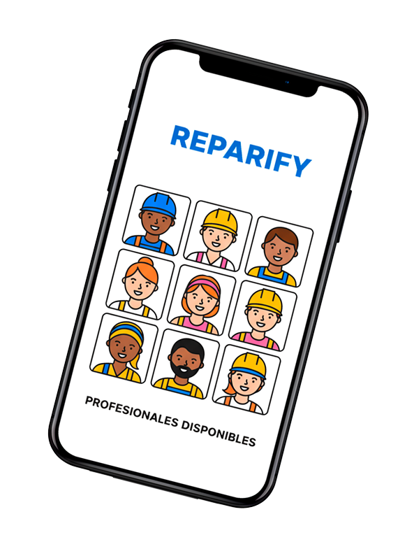

Soluciones inteligentes
para tu hogar
Descubrí qué está pasando y encontrá al profesional ideal
Subí una foto/video o describí tu problema, recibí un diagnóstico instantáneo y conectá con profesionales verificados en tu zona. Todo en un solo lugar.
3 simples pasos para usar Reparify
Subí tu problema
Cargá una foto o video de lo que está pasando en tu hogar.
Recibí tu diagnóstico
Descubrí qué está fallando y cómo solucionarlo.
Elegí tu profesional
Conectá con expertos verificados en tu zona.

Nuestros clientes opinan...
¿Necesitás un servicio?
Encontramos técnicos verificados y calificados. Pedí tu cotización gratis en minutos.
Obtener un diagnóstico¿Eres un profesional?
Unite a nuestra red. Obtén acceso a nuevos clientes y administrá tus trabajos fácilmente con Reparify.
Mas información